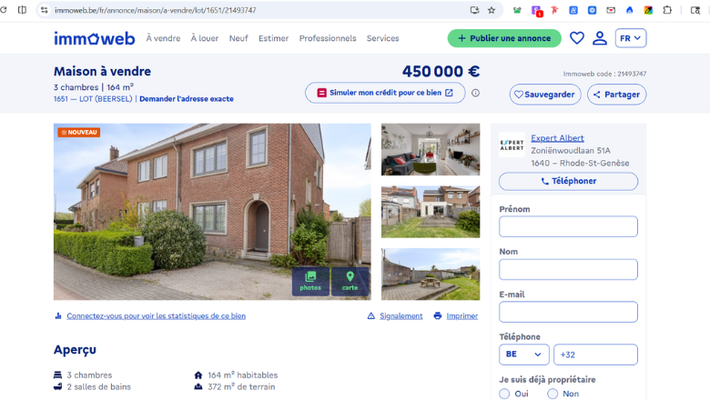
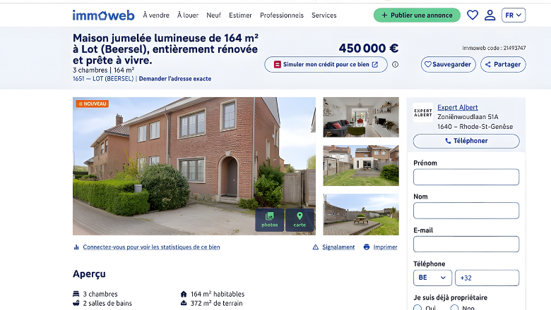
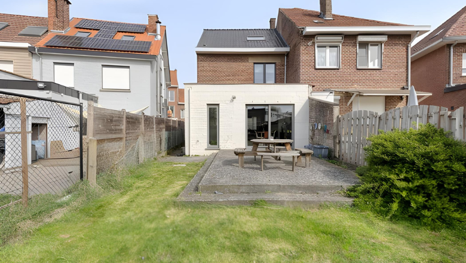

Nous avons réécrit votre bien au 1651 LOT (Beersel) avec la méthode que les agences top 1 % appliquent à leurs mandats prioritaires. La version optimisée est ici, gratuite, complète — et utilisable aujourd'hui.
↓ Votre version optimisée vous attend ci-dessous — commencez à lire.
À gauche : l'annonce publiée aujourd'hui. À droite : ce qu'elle peut générer comme attraction dès demain.


Ce n'est pas une critique de votre bien. C'est une autopsie de la copy. Le bien est excellent. Le texte, non.
Trois versions complètes et publiables immédiatement — FR · NL · EN — pour couvrir tous les acheteurs actifs sur votre marché.
Construite en 1950 et modernisée avec exigence (2010/2015), cette maison 3 façades offre des espaces de vie optimisés. Le rez-de-chaussée propose un salon de 28 m² et une vaste cuisine semi-ouverte de 24 m². Ces pièces de vie se prolongent sur une terrasse de 24 m² et un jardin paysager, tous deux exposés plein Sud.
Dès l'entrée, l'agencement prouve sa fonctionnalité. Le séjour de 28 m² offre un espace de détente confortable, tandis que la cuisine semi-ouverte de 24 m², équipée de son arrière-cuisine pratique, constitue le véritable cœur de la maison. L'ensemble s'ouvre sur un extérieur privilégié : une terrasse de 24 m² et un jardin paysager de 297 m² bénéficiant d'une orientation Sud pour un ensoleillement maximal.
À l'étage, l'espace nuit garantit le confort de toute la famille avec trois chambres bien proportionnées (14 m², 11 m² et une suite potentielle de 24 m²) desservies par deux salles de bains indépendantes. Un grenier complète les espaces de rangement.
Située à seulement 13 km de Bruxelles, avec un accès piétonnier à la gare de Lot et à toutes les commodités. Contactez Expert Albert pour planifier votre visite.
Deze driegevelwoning uit 1950 werd grondig en vakkundig gemoderniseerd. Het gelijkvloers beschikt over een leefruimte van 28 m² en een ruime halfopen keuken van 24 m² met bijkeuken. Deze leefruimtes vloeien naadloos over in het zuidgerichte terras (24 m²) en de fraai aangelegde tuin (297 m²).
De bovenverdiepingen bieden een comfortabel nachtgedeelte met drie slaapkamers (14 m², 11 m² en een indrukwekkende 24 m²) en twee volwaardige badkamers. Een zolder biedt extra opbergruimte.
Toplocatie op slechts 13 km van Brussel. Het station van Lot, scholen en lokale winkels zijn te voet bereikbaar. Neem vandaag nog contact op met Expert Albert.
Built in 1950 and meticulously modernized in 2010 and 2015, this 3-facade property delivers optimized living spaces. The ground floor features a 28 sqm living room and a spacious 24 sqm semi-open kitchen with pantry. Both flow directly onto a 24 sqm south-facing terrace and a 297 sqm landscaped garden — all-day sunlight included.
Upstairs, three bedrooms (14 sqm, 11 sqm, and a 24 sqm master) are served by two independent bathrooms. An attic provides additional storage.
Strategically positioned 13 km from Brussels with walking access to Lot train station, schools, and shops. Contact Expert Albert to schedule your private tour today.

Chaque semaine de statu quo est une semaine offerte à un concurrent mieux positionné. Voici ce que les données du marché révèlent, Eric.
Chaque argument est évalué contre le contexte réel : profil acheteur cible, concurrence active, atouts différenciants objectifs du bien. Rien n'est inventé. Tout est hiérarchisé.
Chaque phrase activé l'un des quatre leviers : curiosité, perte, frustration résolue, ego. La structure émotionnelle de l'annonce est construite — pas improvisée.
Tous les atouts mis en avant sont vérifiables dans les données du bien. Les risques réels (droit de préemption, zone inondable potentielle) sont signalés — pas dissimulés. La transparence est un outil de conversion, pas un frein.
Trois étapes. Aucun jargon. Aucune complexité inutile.
Cette version optimisée du 1651 LOT vous est offerte sans condition. Ce que vous avez lu ici est la méthode — appliquée à l'ensemble de vos mandats, elle change structurellement vos résultats : plus de visites qualifiées, moins de temps perdu, des offres plus fortes.
Une conversation de 20 minutes avec Gradi pour que vous évaluiez vous-même si cette approche a du sens pour votre portefeuille.
Discuter de mes besoins avec GradiChaque annonce non optimisée est un mandat offert à un concurrent mieux positionné.